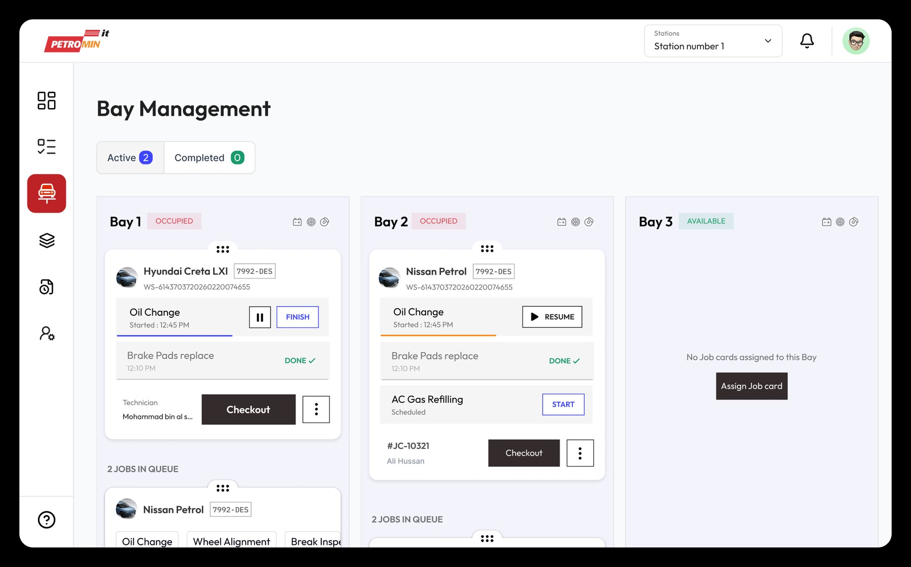
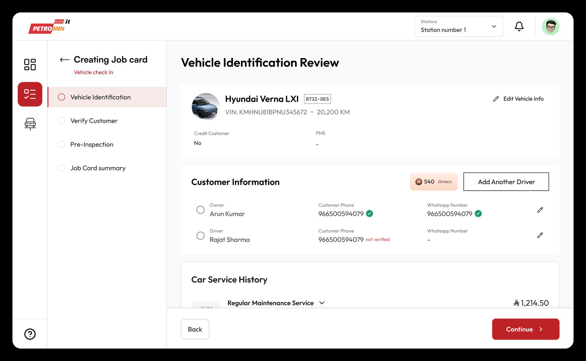
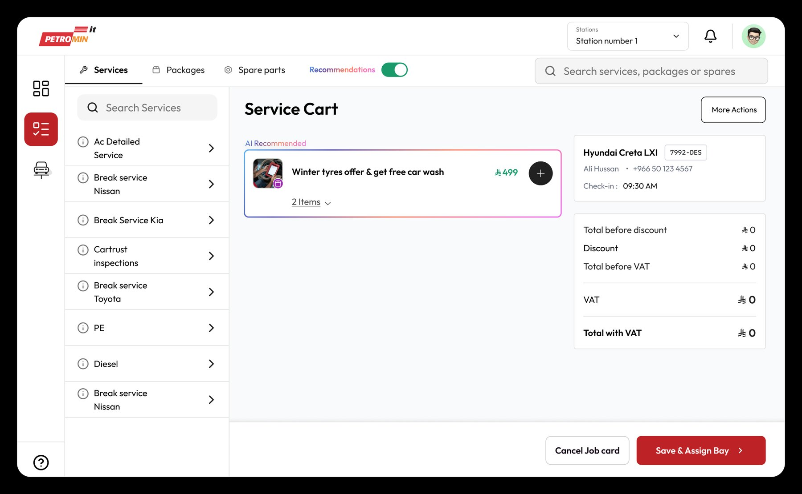
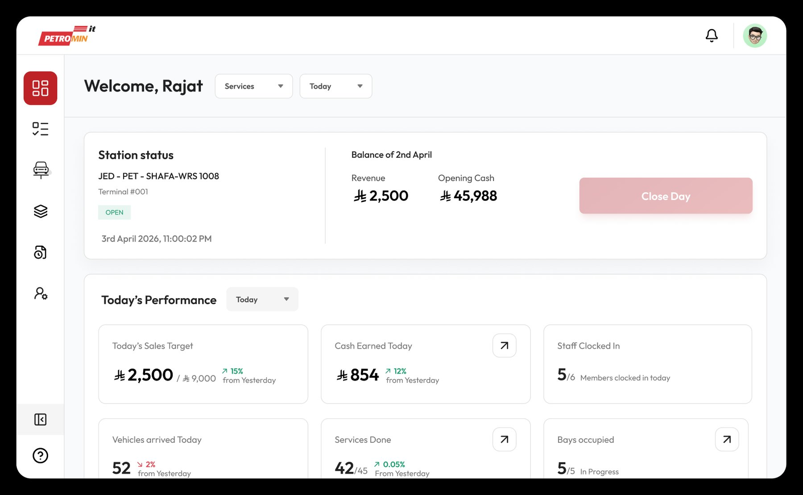

Operations platform case study
We rebuilt how service stations operate
Legacy tools forced every team onto a different system. Service, inventory and finance each held part of the truth, and nobody held all of it. The Garage Management System put the job card at the centre and built the workshop around it.
Disconnected systems slowed every part of workshop operations
Legacy tools forced teams to work across multiple systems, creating delays, duplicate work, and limited operational visibility.
Understanding the business
To understand the daily challenges, we observed workshop operations, interviewed teams across departments, and mapped how work moved from vehicle check-in to billing.
Interviewed the people running it
Station, finance and area managers, across roles and across sites.
Reviewed existing workflows
How a vehicle actually moved through a workshop, step by step.
Mapped the dependencies
System integrations and approval chains, and where each one stalled.
Where the legacy system failed
Six issues recurred at every station we visited.
Teams worked across disconnected systems
Service, inventory and finance operated independently, requiring manual coordination.
Approvals slowed daily operations
Routine approvals delayed work, especially during busy hours.
Managers lacked real-time visibility
Operational updates were only available after work had already progressed.
Technicians switched between tools
Essential information was spread across multiple systems, interrupting servicing.
Inventory records were out of sync
Parts usage and job cards required manual reconciliation.
Peak hours bottlenecked
Approval queues and manual processes slowed workshop throughput.
Five people, one problem, five descriptions of it
"I manually compare records across different systems every day. When something doesn't match, I have no way to know which one is correct."
"Every vehicle requires checking another system. Switching back and forth slows me down and increases mistakes."
"I oversee 12 stations, but I only learn about problems after they've already happened."
"Reconciling invoices with ZATCA is manual, and mismatches are often discovered days later."
"Employee information exists in multiple systems, so we maintain the same data twice."
Every role described the same fracture from a different side of it. Nobody was missing information — it existed. It just never arrived in one place, in time to act on.
A multi-role operational hierarchy
Designed as a connected hierarchy supporting multiple teams, workflows and responsibilities across workshop operations.
Area managers & auditors
Operational oversight, reporting, compliance monitoring.
Station managers
Operational monitoring, bay management, workflow visibility.
Service advisors
Vehicle check-in, customer coordination, approvals.
Technicians
Service execution, inspections, diagnostics, workflow updates.
Inventory teams
Stock tracking, parts requests, inventory transfers.
Finance teams
Invoices, payments, reconciliation, refunds.
Designing for operational speed and clarity
Five foundational decisions that guided every design and interaction across the platform.
Workflow-first UX
Interfaces were designed around operational states and guided workflows instead of traditional page-based navigation.
Low cognitive load
The experience minimised unnecessary interactions to support fast-paced workshop environments.
Scan-first interactions
VIN or plate scanning, quick actions and contextual inputs reduced manual entry effort and errors.
Real-time visibility
Operational states and workflow progress remained visible throughout the service lifecycle.
Role-based complexity
Each user experienced only the operational layers relevant to their responsibilities.
Simplify operational complexity without reducing operational visibility.
Built around the job card lifecycle
The platform architecture was centred on the job card, connecting operational workflows, technician activity, inventory and service states into a single execution system.
- Vehicle check-in — VIN or plate identification
- Customer verification and pre-inspection
- Job card created, services and parts attached
- Assigned to a bay, assigned to a technician
- Service execution with live state updates
- Inventory drawn down against the job card
- Checkout, invoice, reconciliation
Bay operations & vehicle check-in
Optimising real-time check-in workflows.
Live bay monitoring
Real-time visibility into occupancy and operational states.
Operational state visibility
Service teams could instantly track vehicle progression across active bays.


Quick vehicle identification
VIN or plate-based identification reduced manual entry effort.
Guided job creation
Service recommendations and contextual workflows accelerated check-in operations.

A scalable operational design system
Six modules and eight roles need one vocabulary, or every team invents its own.
Cards, tables, chips, action hierarchy, workflow panels.
Colour, operational state colours, typography, spacing.
Cart widget, sidebar stepper, right drawer, reusable layouts.
In queue, in progress, on hold, scheduled, done, checked out. Six states that had to read identically on a technician's tablet, a manager's dashboard and a finance report — because the same job card appears in all three.
Real-time operational visibility
Management teams gained centralised visibility into workshop operations, service throughput and operational performance — branch analytics, service KPIs, technician productivity, inventory insights, financial tracking.

Balancing operational complexity with usability
Depth without density
Eight roles need eight different amounts of information. Role-based complexity meant each person saw only their layer — the depth stayed in the system, out of the interface.
Speed on a shop floor
A technician with oily hands on a tablet is not a desk user. Scan-first interactions and large targets mattered more than any screen we could have drawn.
What the design is built to deliver
One technician-first ecosystem across technicians, service teams, finance, inventory and management — built for operational clarity, workflow efficiency and real-time visibility.
These are projections, not measured results. Each one is modelled from task-completion times recorded while watching a single user carry out that specific task on the legacy tools, compared against the same task in the new flow.
- Multi-role platform across eight responsibilities
- Real-time workflows on a live dashboard
- Tablet and web, matched to where the work happens
- Workflow-centric UX built on operational states
- Enterprise scalability across the station network
- Service, inventory and finance in separate systems
- Approvals queued behind busy hours
- Visibility that arrived after the fact
- Technicians switching tools mid-job
- Inventory reconciled by hand
Three things this taught me
Nobody was missing information — it all existed somewhere. The problem was never data, it was that no single view assembled it in time to act on.
Five roles described the same fracture from five sides. Interviewing across the hierarchy, not just the primary user, is what made the shape of it visible.
Choosing the job card as the architectural centre decided more than any screen did. Get the spine right and the modules hang off it; get it wrong and every screen argues with the next.
More case studies

Mojaz Report Landing Page
38.4k monthly organic sessions Everything elseSee all work ↗
Two full case studies and the smaller projects behind them.Want to talk through any of it?
Case study prepared for portfolio purposes. Delivered under NDA with Petromin Express. Outcome figures are projections modelled from observed task-completion times, not measured production results.